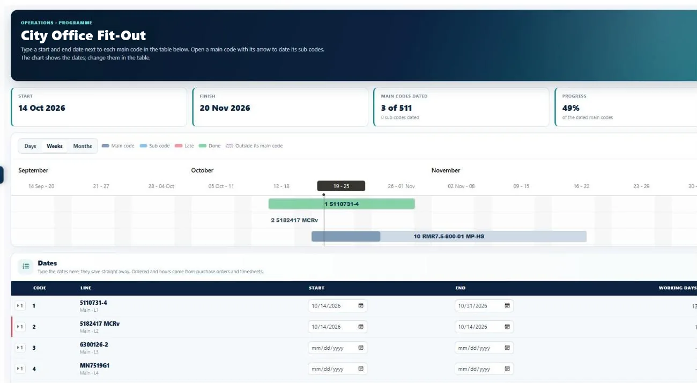

Construction cost management software
Every stage of the job.One platform.
Manage your construction projects in one place. From the client's BOQ to the final report, I-Cost keeps the estimate, quotations, supplier prices, orders, deliveries, site hours, programme and carbon connected. Nothing is retyped, nothing is lost in email, and the forecast margin is always up to date.
How it fits together
One project page.
Eight clear steps.
Every project in I-Cost follows the same eight steps: set up the project, price the estimate, agree the price with the client, lock the budget, buy from suppliers, track hours and progress, then report on cost and carbon. The project page shows where each step stands and what to do next.
- Estimate, agreed sum, ordered and hours at a glance
- "Next step" on every project
- Project dates against today
- Each step opens the right page

01 / Estimating, BOQ & quantity takeoff
Construction estimating and BOQ pricing, without retyping.
The problem: retyping a bill of quantities takes days, and every line retyped is a chance for an error.
Upload the client's Excel or CSV BOQ, tell I-Cost what each column is, check the preview and the total, and the lines go straight into your estimate, with their areas and levels. Working from a model instead? Import an IFC file and I-Cost adds up the quantities in your browser, or send them straight from Revit 2023 to 2027 with the free I-Cost for Revit add-in (beta, now in review for the Autodesk App Store).
- Excel / CSV BOQ import with total check
- BIM model import (IFC) Beta
- Revit add-in Beta
- Cost and selling rates with margin
- Libraries and copy to estimate
- Price check on copied estimates
- Locked final estimate and revisions
- Areas and levels from the file
- Photos on the estimate

02 / Client quotations
Construction quotes your client can accept.
The problem: the client negotiates a discount, and the figure everyone agreed gets lost between emails and spreadsheets.
Turn the estimate into a quotation PDF at selling prices only, never cost or margin, with an optional summary page. Record the negotiated discount and the reason, mark the accepted revision, and that agreed contract sum is used in every report from then on.
- Quotation PDF from the estimate
- Summary page and preview
- Discount with a private reason
- Revisions: sent, accepted, replaced
- Agreed contract sum in every report
- Your terms and an acceptance box

03 / Supplier & procurement management
Supplier management: real prices, side by side.
The problem: supplier quotes arrive by email in different formats, and someone compares them by hand.
Pick the estimate items by area, level and section, and send one quotation request to several suppliers. I-Cost suggests the suppliers most likely to price the items, from what they supply and what you have ordered from them before. Suppliers price online in their free portal, the replies line up side by side, and you order from the lowest quote in one click.
- Requests by area, level and section
- A quantity on every item
- Suggested suppliers
- Free supplier portal
- Side-by-side price comparison
- Alert when a supplier replies
- Order from the lowest quote
- Supplier list with what they supply

04 / Orders & deliveries
A purchase order system built for construction.
The problem: orders, delivery notes and invoices live in different places, so nobody knows what is really committed.
Raise purchase orders from the estimate, save drafts and keep every revision. Suppliers accept the order and record each delivery with a QR label; your team scans it, confirms what arrived and reports anything short or damaged. Goods received, invoices, credit notes and accruals all sit on the order, and the Item tracker shows every material item from request to invoice. Supplier invoices can be exported as a file for Xero's bill import, so finance doesn't retype them.
- Drafts, revisions and printed orders
- Order progress from the supplier
- QR delivery notes
- Goods received and accruals
- Credit notes and closing orders
- Item tracker, request to invoice
- Supply chain view
- Delivery address from the project
05 / Cost & budget tracking, reports
Construction cost and budget tracking, live.
The problem: most contractors only find out what a job really made at the final account.
Lock the estimate and it becomes the approved cost budget, with every version kept. I-Cost then tracks committed cost (orders, invoices, staff and site labour), what has been incurred, the forecast final cost and the forecast margin, by area and by cost type. Click any figure to see the records behind it.
- Approved cost budget, versioned
- Committed and incurred
- Forecast final cost and margin
- Cost to complete
- Cost types and areas
- The records behind every figure
- Word and PDF project report
- CSV for Excel

06 / Programme & dashboard
Construction programme software that flags late work.
The problem: late work is spotted when it is already costing money.
The programme lists the estimate's sections in order: type start and end dates, and the Gantt chart shows them, with late lines flagged and an Excel download. A time summary shows progress and late tasks across all projects, and the dashboard shows what is waiting for you: timesheets to approve, supplier replies, invoices and estimates still to lock.
- Gantt programme from the estimate
- Late and coming up next
- Time used against work done
- Excel download
- "Waiting for you" dashboard
- Recent projects and activity

07 / Timesheets
A construction timesheet app for site and office.
The problem: paper timesheets arrive days late, and labour cost is a guess until the end of the month.
Site teams log hours on their phone with quick time buttons, and supervisors log a whole gang in one go. Managers approve a week in one click or send it back with a note. Approved hours are locked, and every hour is costed at the hourly rates you set, straight into the cost report.
- Log hours on a phone
- Site gangs in one go
- Design tasks on design hours
- Approve or send back
- Approved hours locked
- Costed at your hourly rates
- Photos from the camera
- "Log my hours" shortcut

08 / Carbon
An embodied carbon calculator inside your estimate.
The problem: tenders and planning conditions ask for carbon figures, and consultants are expensive.
Every estimate line can carry an embodied-carbon factor from UK ICE data or your own EPDs. For a full assessment, whole life carbon (beta) links estimate items to materials, works out the weights for you and covers stages A1–A5, B1–B7, C1–C4 and D, following the RICS Professional Standard (2nd edition) and BS EN 15978. Matching copes with typos and BOQ shorthand, and you confirm anything uncertain.
- Embodied carbon per estimate line
- UK ICE and your own EPD factors
- Whole life carbon Beta
- Weights worked out for you
- Smart matching with accuracy slider
- Carbon dashboard and reports

Team, access and support
Built for construction teams.
Give each person the access they need, keep conversations on the project, and get help inside the app.
Access and security
- Roles and permissions for each person
- Read-only Reviewer for directors, client QSs and auditors
- Invite your team by email
- One login for suppliers who are also customers
- Hourly off-site backups and a standby server
- Download your company data at any time (UK GDPR)
Help and messages
- Team chat with unread badges
- Costa, the in-app help assistant
- Guided tutorial with step-by-step chapters
- Help Desk to raise a question with the I-Cost team
Works anywhere
- Installs like an app on phone, tablet and PC
- No app store and nothing to download
- One live system for site and office
- "Log my hours" on the home screen
Does I-Cost replace our estimating spreadsheets?
Yes. You import the client's BOQ, price it with cost and selling rates, apply the margin and lock the final estimate in I-Cost. The same estimate then drives quotations, orders, timesheets, the programme, carbon and the cost report, so nothing is retyped.
Which BIM files can I import?
IFC files exported from Revit, ArchiCAD, Vectorworks, Tekla or other BIM programs. From Revit 2023 to 2027 there is no need to export: the free I-Cost for Revit add-in sends the quantities straight from Revit. BIM import and the add-in are in beta.
Do suppliers need an I-Cost licence?
No. Suppliers use the supplier portal free of charge to receive quotation requests, send prices, accept orders and record deliveries.
How is the forecast margin worked out?
Each area is forecast at its approved cost budget, or at what is already committed if that is more. Committed cost includes orders, invoices, staff hours and site labour. The forecast final cost is compared with the agreed contract sum to give the forecast margin in pounds and per cent.
Can I export reports?
Yes. Reports open on screen and download as CSV for Excel. The project report can also be customised and downloaded as a Word or PDF document with your logo. The programme and the estimate download to Excel.
What does whole life carbon cover?
Whole life carbon assessments (beta) cover life-cycle stages A1 to A5, B1 to B7, C1 to C4 and D, following the RICS Professional Standard (2nd edition) and BS EN 15978, using the quantities already in your estimate.
Is I-Cost construction project management software?
I-Cost manages the commercial side of construction projects: estimating, client quotations, supplier management and procurement, purchase orders and deliveries, timesheets, the programme, cost and budget tracking, and carbon. It does not replace drawing management, RFI or snagging tools.
Can I manage suppliers and subcontractors in I-Cost?
Yes. Suppliers and subcontractors receive your quotation requests and purchase orders in a free portal, send prices, accept orders and record deliveries, and I-Cost suggests who to ask from what they supply. Your own site labour is tracked through timesheets.
Can I do quantity takeoff in I-Cost?
Yes, from a BIM model: import an IFC file, or send the quantities from Revit with the I-Cost for Revit add-in (both beta), and I-Cost adds up the quantities, keeping the levels, for your estimate. Working from drawings? Import the bill of quantities you already have from Excel or CSV.